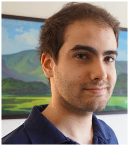

Andrés Saladrigas - Producer

Hello, I’m Andres Saladrigas, Producer of Broken Gem Studios and The HacknSlash game The Witcher: Ties of Destiny. During this project I have been responsible for delivering a good product while we created a fully functional video game engine. As a Team, we developed not just the game, but the tools needed for its development as well.
During these 4 months, I supervised the development process by analyzing our current goals and external factors, synthesizing actual information and assets in order to provide a better schedule and working environment. Adaptation and flexibility in our working structure was crucial. We were able to follow the project development process with better results while facing many difficulties in the journey.
As a part of my job, I took the lead in the monitoring and control of the team member’s tasks and objectives. To select each member´s activities and objectives I kept in mind how to achieve better goals and how to enhance skills where the individual had shown clear potentialweb, leading to a more satisfactory result. Selecting correct responsibilities and needs was essential in order for each team to shine in their own way in our project.
As part of my job I set up and created social meetings and group mechanics to keep the team organized. When the Pandemic changed our working environment I needed to develop new working dynamics that played a substantial role in our daily activities, using available tools such as HacknPlan, Google Drive and Discord to create a working server.
The Global Crisis was a huge challenge that we successfully went through. Constant communication was key. I meet with Team members in order to hear out their obstacles, problems and help them in order to raise the team’s morale and effectiveness. Each individual emotionality affects the whole team morale as emotions are contagious. Being flexible had a huge impact as members were sometimes unavailable and constant redistribution of the work was necessary to achieve the objectives.
Communication was the changing factor. Keeping an easy channel made the difference. Minimizing and solving personal conflicts between team members and helping the resolution of them ensures the efficiency of the team. Negotiation and mediation was also a necessary part of my job and negotiating with team members, product owners and the university was crucial to get the expected results.
PROJECT CONTRIBUTION
- Team management: Creating meetings, individual tasks, due dates as well as follow and support team group relationships and individual wellbeing.
- Team records: Tracking and control of team members activities, responsibilities and performance to ensure a steady working rate.
- Organization tools mantainment: Use of excel, hacknplan, drive, github, teamup and discord to coordinate and track the studio working process.
- Guidance during the creation of presentations and documentation: Supervise the production of group, individual presentation and creation of concept discovery documents.
- Scrum methodology: Follow, learn and iterate the scrum methodology to planify teamwork and build delivery while in accion.
- Activity assessment: Establish team mechanics to help team members achieve personal and team goals by selecting specific tasks to strengthen a member’s specific skills providing better game results.
- Intervention, mediation and negotiation: Planify and carry out meetings in order to reach mid terms agreement and solve conflicts between team members, product owners and the teaching university.
- Risk Manager: By having the overall view of the development I was able to identify, evaluate and prioritise risk, coordinating team efforts to minimize accidents.
- Game Build Assessment: Coordinate team effort and schedules to create a Game Build.
- Quality assurance: Find, recreate and deliver game and engine bugs to the necessary team members.
- Handle and adaptation to External variables:Constant adaptation and flexibility to changes in a crisis environment due to COVID-19, with mendling planning and dealing with outside factors that had a huge impact in our working environment (studies, private and personal situations)